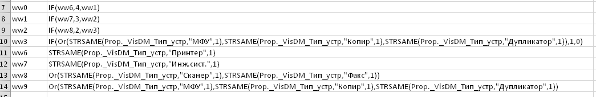
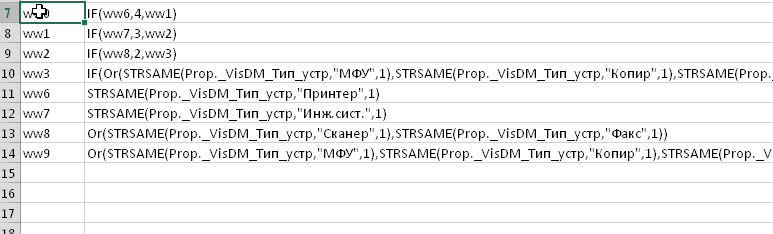
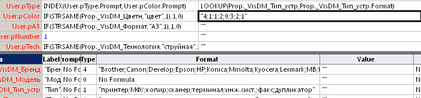

Недавно потребовалось сделать смарт-шейп... Такой весь из-себя управляемый данными. И формулы получались довольно сложными. Вот например, есть список типов
принтер;МФУ;копир;сканер;терминал;инж.сист.;факс;дупликатори задание к нему - в зависимости от типа отображать одну из 5 картинок. В итоге требование вылилось вот в такую формулу с вложенными IF, OR и STRSAME.
IF(STRSAME(Prop._VisDM_Тип_устр,"Принтер",1),4,IF(STRSAME(Prop._VisDM_Тип_устр,"Инж.сист.",1),3,IF(OR(STRSAME(Prop._VisDM_Тип_устр,"Сканер",1),STRSAME(Prop._VisDM_Тип_устр,"Факс",1)),2,IF(OR(STRSAME(Prop._VisDM_Тип_устр,"МФУ",1),STRSAME(Prop._VisDM_Тип_устр,"Копир",1),STRSAME(Prop._VisDM_Тип_устр,"Дупликатор",1)),1,0))))Написал, проверил - получил ошибку. Исправил - опять ошибка. Ну невозможно сходу и без ошибок создать такое.
Естественно возникает мысль, как бы упростить такую работу. Напрашивается - придумать что-то с подстановками. То есть разложить условие на несколько более простых и проверяемых строчек, которые потом программно соберутся вместе. Вроде бы такое можно реализовать хоть на VBA, но возникает проблема с кавычками. Их придется либо задваивать, либо вообще добавлять CHR(34), что явно снизит уровень удобства.
В итоге наиболее удобным оказался Excel. В ячейки можно занести все подстановки (здесь кавычки не мешают), а собрать потом можно простейшим макросом.
Выбрал формат из двух колонок: слева метка, справа подстановка. Метки обозначил произвольно, взял комбинацию, которая в тексте больше не встречается: ww1, ww2... Можно было и другие придумать - это не так важно.

Макрос получился тоже довольно примитивным. Последовательно просматривает селектированную область и подставляет вместо меток их значения из второго столбца. В конце выводит результат в следующую строку под селектированной областью. Остается только скопировать ее в Visio.
Sub ttt()
Dim i1 As Long, i2 As Long, s As String
s = ""
i1 = Selection.Cells(1).Row
i2 = Selection.Cells(Selection.Cells.Count).Row
s = Cells(i1, 2)
For i = i1 + 1 To i2
s = Replace(s, Cells(i, 1), Cells(i, 2))
Next
Cells(i, 2) = s
End Sub
Вот так это выглядит в работе.

Так как макрос обрабатывает только селектированную область, то на одном листе Excel можно собрать и даже сохранить на всякий случай множество таких формул. На весь смарт-шейп хватит, а то и на несколько.
Таким образом, будет полезно иметь под рукой файл Excel с макросом, которым можно будет воспользоваться для формирования сложных формул. Будет такой технологический инструмент на всякий случай. Можно даже оставить в нем несколько примеров, чтобы через некоторое время не вспоминать, как это работает.
Кстати, Excel все-таки не очень удобен для работы с текстом. Поэтому я приловчился сначала формировать нужную таблицу подстановок в блокноте (отделяя метки табуляцией), потом копировать ее в Excel и запускать макрос. Так получается быстрее всего.
P.S.: В заключение хотелось бы добавить, что иногда вместо формулы с вложенными IF можно использовать конструкцию LOOKUP-INDEX, как показано ниже на рисунке.

Здесь решается аналогичная задача, но управляющее значение поступает не через источник данных, а выбирается пользователем из фиксированного списка. В этом случае можно функцией LOOKUP определить номер выбранного значения, а потом функцией INDEX выбрать результат с тем же порядковым номером уже из второго списка. Но это уже другая тема...